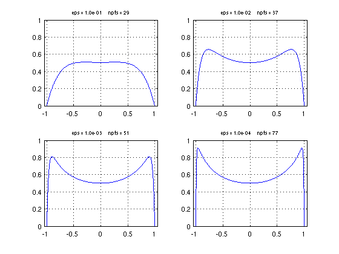
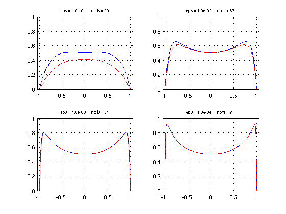
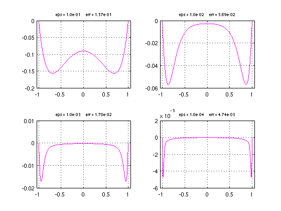

Matched asymptotics and boundary layers
Nick Trefethen, December 2010
(Chebfun example ode/MatchedAsymp.m)
A powerful technique for problems with large or small parameters is the method of matched asymptotics, where approximate solutions accurate in one region of the problem domain are matched to different approximate solutions accurate in another region. This subject is discussed in many books by authors including Bender & Orszag, Fowler, Howison, Lagerstrom, Nayfeh, and van Dyke.
For example, consider the linear boundary-value problem
-eps*y" + (2-x^2)y = 1, y(-1) = y(1) = 0
with eps<<1. In Chebfun, we can set up the problem conveniently with a couple of anonymous functions:
d = domain(-1,1); x = chebfun('x',d); L = @(eps) -eps*diff(d,2) + diag(2-x.^2) & 'dirichlet'; y = @(eps) L(eps)\1;
Here are the solutions for three values of eps:
LW = 'linewidth'; FS = 'fontsize'; figure, tic for j = 1:4 eps = 10^(-j); yeps = y(eps); subplot(2,2,j), plot(yeps,LW,1.6), hold on grid on, axis([-1.05 1.05 0 1]) title(sprintf('eps = %4.1e npts = %d',eps,length(yeps)),FS,8) end toc
Elapsed time is 1.914760 seconds.
It is clear almost at a glance what form the solution is taking as eps decreases to zero. Away from -1 and +1, the eps*y" term is negligible and the solution is approximately that of the rest of the equation,
y_interior = 1/(2-x^2).
Near -1 and 1, on the other hand, eps*y" becomes significant as the solution quickly bends down to meet the boundary condition.
In matched asymptotics the solution away from the boundary layers is called the "outer solution". Here we have two boundary layers, each of which has an "inner solution". To analyze the right boundary layer, for example, we make the approximation x=1. This gives a constant coefficient second-order equation, with an exponentially growing solution exp(x/sqrt(eps)) and an exponentially decaying solution exp(-x/sqrt(eps)). One of our two free parameters is used up by the fact that only the first of these is appropriate at the right boundary. The other parameter is used to satisfy the boundary condition, giving
y_right = 1 - exp((x-1)/sqrt(eps)).
Similarly at the left boundary we have
y_left = 1 - exp(-x-1)/sqrt(eps)).
The three solutions can be combined to give an asymptotic model valid throughout [-1,1]:
model = @(eps) 1./(2-x.^2) - exp((x-1)/sqrt(eps)) - exp((-x-1)/sqrt(eps));
Let us superimpose the prediction of this model, a dashed red line, on the plots as before
for j = 1:4 eps = 10^(-j); subplot(2,2,j) meps = model(eps); plot(meps,'--r',LW,1.6) grid on, axis([-1.05 1.05 0 1]) end
It is interesting to plot and measure the differences between the true solution and the model:
for j = 1:4 eps = 10^(-j); subplot(2,2,j) yeps = y(eps); meps = model(eps); hold off, plot(meps-yeps,'m',LW,1.6) grid on, xlim([-1.05 1.05]) err = norm(yeps-meps,inf); title(sprintf('eps = %4.1e err = %5.2e',eps,err),FS,8) end
These plots reveal global convergence at a rate O(sqrt(eps))as eps shrinks to zero, with the maximal error being attained in a matching region near the boundaries of width O(sqrt(eps)). In the interior the accuracy is higher, O(eps).
Matched asymptotics is a highly developed field and has been applied to linear and nonlinear problems of all kinds. A linear problem with a variable coefficient may have interior as well as boundary layers, and for a nonlinear problem there may be interior layers at arbitrary locations.